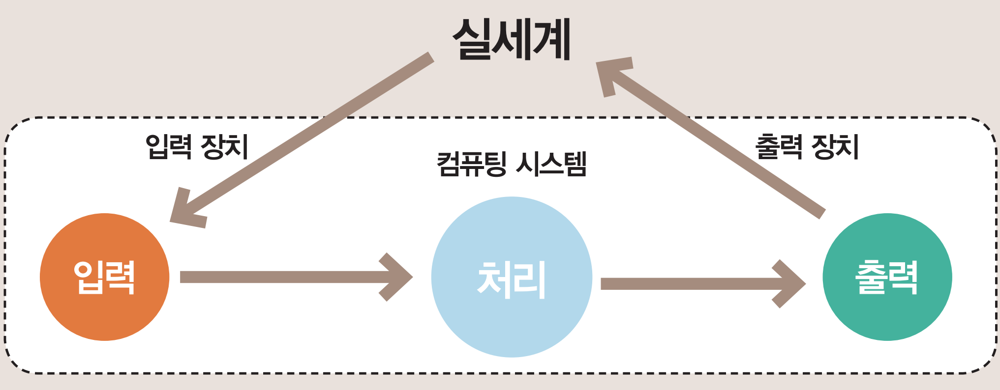

피지컬 컴퓨팅은 □□□□와 □□□□□를 활용해 현실세계와 상호 작용하는 컴퓨팅 시스템으로 현실세계의 여러 가지 환경 자료를 입력받아 처리한 결과를 출력하기 위한 장치를 구성하고, 이 장치의 동작을 제어하는 프로그램을 작성하여 결과를 산출해 내는 장치이다. 컴퓨팅 환경에서 벗어나 현실 세계에 영향을 주고 받을 수 있는 등 외부 세계와의 소통을 한다는 것이 기존 컴퓨팅 장치와의 가장 큰 차이점이다.
피지컬 컴퓨팅 장치는 아래와 같은 구성 요소로 이루어지며 상호 작용한다.
센서 : 하드웨어 장치로 사물과 주변 환경 정보를 감지하는 것
구동기 : 전기적인 신호에 반응하는 모든 장치(움직임을 주는 장치)
마이크로 컨트롤러 : 센서 정보를 받아들이고 구동기를 제어하는 장치

그림 : 피지컬 컴퓨팅 흐름도
 그림 : 아두이노 장치
그림 : 아두이노 장치
그림 : 아두이노 장치
인터넷 검색을 통해 피지컬 컴퓨팅 장치를 구성하는 센서와 구동기, 마이크로 컨트롤러의 종류를 조사해보자.
| 센서(Sensor) | 구동기(Actuator) | 마이크로 컨트롤러(Micro Controller) |
|---|---|---|
| ex) 초음파 센서 | ex) 서보모터 | ex) 라즈베리파이 |
| - | - | - |
| - | - | - |
| - | - | - |